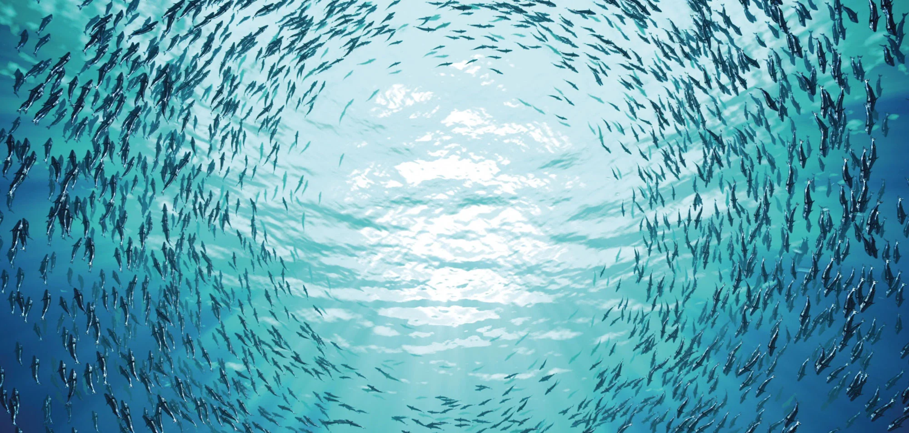
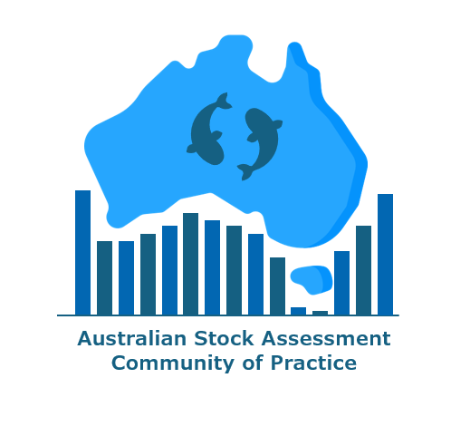

Note
- Note our new venue! We will be hosting in-person participants at 275 George Street, Brisbane.
Our Community of Practice was officially launched in April 2026, with the mission to build a collaborative community of stock assessment practitioners to better support sustainable fisheries management. You can read more about the Community of Practice in our 1-page summary.
- Time: 10-14 August, 9am–5pm AEST
- Location: 275 George Street, Brisbane City (14.04 Boardroom)—or online
- Cost: Free. Travel and meals are at the expense of attendees.
Who is this conference for?
This workshop will comprise of two parts:
- Days 1 to 2 of this workshop is generally aimed at stock assessment scientists. The schedule contains conference style activities for introduction and networking.
- Days 3 to 5 is aimed at both stock assessment scientists and fishery managers. Over these three days, Prof Andre Punt will lead his course “MSE with Managers”.
If you are unsure which part is best for you, get in touch.
All 5 days of the workshop will be delivered in a hybrid format (both online and in person). Links to the Microsoft Teams meetings will be sent out a few days before the workshop.
